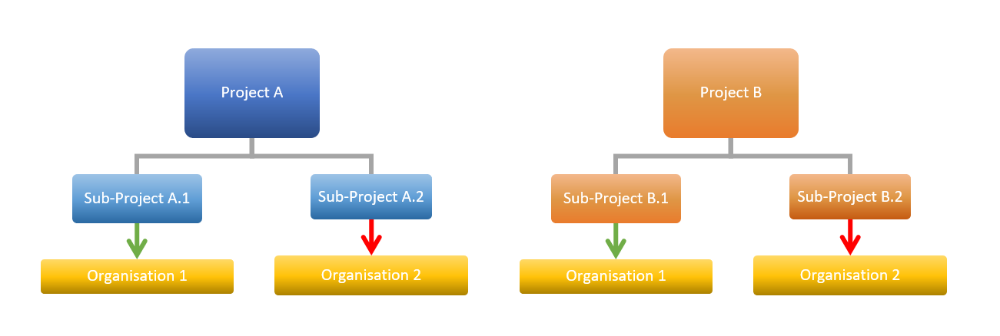
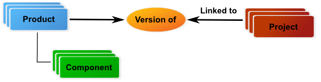
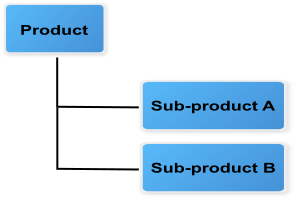
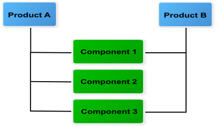
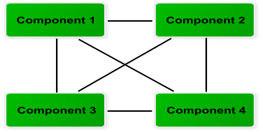
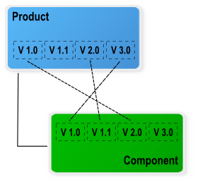
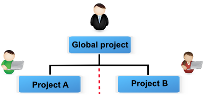
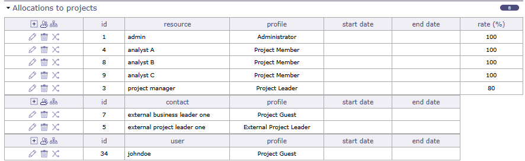

Concepts¶
Projet¶
Un projet est l’entité principale de ProjeQtOr.
L’élément projet est plus qu’un élément de planification.
Il permet également de regrouper toutes les données liées au projet :
Gestion des risques : atténuation, réserve
Tickets : Anomalie, Suivi des bogues, Demande de changement, Support
Pilotage : réunion, décision, Plan d’action
Dépenses et Recettes : dépenses du projet, dépenses individuelles, dépenses d’activités, Commande, Facture, Paiement…
Permet de restreindre la visibilité des données aux utilisateurs par projet.
La visibilité des données du projet est accordée en fonction du profil de l’utilisateur.
Voir aussi
Projet Ordre de planification Définition des profils Tableau de bord des projets Affectation au projet
Sélecteur de projet¶
Le sélecteur de projet fonctionne comme un filtre.
Par défaut, le sélecteur affiche « tous les projets ». Vous pouvez modifier cette vue dans les paramètres utilisateur et choisir le projet à afficher par défaut.
Vous pouvez restreindre les données à un ou plusieurs projets spécifiques sans nécessairement y être rattaché.
Note
Le type de projet est défini dans un type de projet.
Qui est associé à un projet. Voir : Projet
Voir aussi
Type de projet¶
Quatre types de projets peuvent être définis :
Projet opérationnel¶
Code : OPE
Type de projet le plus courant pour le suivi des activités.
Un projet peut être non facturable, utilisé par exemple pour des projets internes ou administratifs, ou facturable.
Vous pouvez choisir le type de facturation associé à chaque projet parmi : facturation manuelle, prix fixe, temps plafonné, régie, interne.
Projet administratif¶
Code : ADM
Permet de suivre le travail non productif tel que les congés, les absences pour maladie, les formations, etc.
Toutes les ressources ont accès à ce type de projet sans être affectées (Projet) ni assignées (Activité).
Créez une activité, comme pour un projet OPE, pour chaque type d’absence.
Voir aussi
Projet modèle¶
Code : TMP
Conçu pour définir des modèles à copier dans un projet opérationnel.
Tout chef de projet (profil) peut voir et copier ces projets sans y être assigné. Pour modifier directement ce projet modèle, une assignation est requise.
Pour le modifier sans assignation, vous devez d’abord copier le projet dans un projet de type opérationnel (OPE).
Un projet modèle, même s’il est affiché dans le diagramme de Gantt, n’est pas pris en compte dans la planification. Même s’il comporte des assignations et une charge affectée, celles-ci ne sont pas enregistrées et ne sont donc pas planifiées.
Vous ne pourrez pas afficher le détail de planification sur les projets de type modèle.
Voir aussi
Projet de proposition¶
Code : PRP
Les projets de type proposition sont destinés à identifier des projets stratégiques. Ils permettent de définir des objectifs basés sur des facteurs internes et externes pour les atteindre.
Pour les projets de ce type, 4 champs supplémentaires sont affichés :
Force
Faiblesse
Opportunité
Menace
La valeur stratégique est obligatoire.
Le projet est automatiquement enregistré comme « En construction » et est en lecture seule.
Voir aussi
Affectation au projet¶
L’affectation au projet est utilisée pour :
Définir la visibilité des données du projet avec les droits d’accès.
Définir la disponibilité des ressources.
Définir la période d’accès aux données du projet par l’utilisateur.
Vous pouvez sélectionner un utilisateur, une ressource ou un contact.
Si le contact sélectionné est également une ressource, il sera affiché dans le tableau d’assignation au niveau de la ressource.
Affectation des utilisateurs et des contacts¶
L’affectation au projet peut être définie dans les écrans Projet et Utilisateurs.
Le profil sélectionné permet de définir les droits sur tous les éléments du projet.
Le profil affiché en premier sera le profil par défaut, mais le profil attribué à une affectation peut être différent sur chaque projet.
Ces droits s’appliquent uniquement au projet sélectionné. Si un sous-projet y est créé, les droits seront automatiquement hérités.
Vous pouvez modifier le profil sur n’importe quel projet à tout moment.
La sélection de la période permet de définir la période de visibilité des données du projet. Elle peut être utilisée pour limiter la période d’accès, conformément à la convention de service.
Note
Le profil défini dans l’affectation au projet n’accorde ni ne révoque l’accès aux utilisateurs.
L’accès général aux fonctionnalités et aux données de l’application est défini par le profil utilisateur par défaut.
Affectation des ressources¶
L’affectation au projet permet de définir la disponibilité des ressources sur le projet.
Une ressource peut être affectée à des projets à un taux spécifié pour une période donnée.
L’affectation au projet peut être définie dans les écrans Projet et Ressource.
Vous pouvez également affecter une équipe ou une organisation à un projet dans les écrans Équipes et Organisation.
Note
Une ressource affectée à un projet peut être définie comme responsable du traitement des éléments du projet.
Période & Taux¶
Une ressource peut être affectée à un projet à un taux spécifié pour une période donnée.
Ce taux est utilisé pour réserver du temps de planification pour d’autres tâches.
Par exemple, si le taux d’affectation est de 50 %, la ressource dont le calendrier hebdomadaire est de 5 jours (du lundi au vendredi) ne sera pas planifiée plus de la moitié de ce calendrier, soit 2,5 jours par semaine.
Si la période n’est pas spécifiée, la ressource est affectée pour toute la durée du projet.
Avertissement
Le calculateur de planification tente de planifier le travail restant sur la tâche assignée à une ressource dans la période d’affectation au projet.
Si le travail restant sur la tâche ne peut pas être planifié, une barre violette apparaît dans la vue Gantt.
Changer de ressource¶
Une ressource peut être remplacée dans l’affectation au projet.
Toutes les tâches assignées à l’ancienne ressource seront transférées à la nouvelle ressource avec le travail planifié et le travail restant.
Le travail effectué sur les tâches appartient toujours à l’ancienne ressource.
Multi-affectation¶
Une ressource peut être affectée à plusieurs projets sur la même période.
Dans la section Affectations de l’écran Ressource, un outil permet d’afficher les conflits.
Astuce
Comment résoudre les conflits ?
Vous pouvez modifier la période d’affectation pour éviter les chevauchements entre projets.
Vous pouvez modifier le taux d’affectation pour qu’il ne dépasse pas 100% sur la période.
Activité¶
Une activité est un type de tâche qui peut être planifiée ou qui regroupe d’autres activités.
Il s’agit généralement d’une tâche de longue durée pouvant être assignée à une ou plusieurs ressources.
Les activités apparaîtront dans la vue du planning Gantt.
Vous pouvez considérer une activité comme :
Des tâches planifiées,
Des demandes de modification,
Des phases,
Des versions ou de nouveaux déploiements,
Les activités peuvent être regroupées selon un lien Mère / Fille. L’activité parente doit appartenir au même projet.
Une structure WBS est appliquée et un index dynamique est calculé pour toutes les activités. Il peut être modifié dans la vue de planification Gantt par glisser-déposer.
Une activité peut être liée à des éléments non planifiables comme les tickets, afin que le temps passé sur les tickets soit pris en compte dans la planification globale du projet. Cette option permet d’attribuer un pool de temps qui sera planifié et de lier les tickets à ce réservoir. Le temps passé sur les tickets sera alors déduit de celui de l’activité de planification.
Voir aussi
Assignation¶
L’assignation est utilisée pour affecter des ressources aux tâches du projet (activité, session de test, réunion). Seules les ressources affectées au projet peuvent être assignées aux tâches du projet.
Elle consiste à assigner une ressource à une tâche dans une fonction spécifique et contient les données relatives au travail sur la tâche : travail planifié, travail réel, travail restant et travail réévalué.
Vous gardez la trace des ressources qui ont été assignées et ont travaillé sur l’activité.
Vous pouvez définir une période pour la ressource sur chacune des activités.
Vous pouvez également définir un taux d’assignation pour chaque activité qui déterminera la planification journalière en fonction du pourcentage de son ETP.
Important
Par défaut, vous ne pouvez pas supprimer l’assignation d’une ressource après que celle-ci a saisi du travail réel sur l’activité.
Cette assignation peut être supprimée par un profil disposant de l’option « Peut supprimer les éléments avec du travail réel » dans le menu des droits d’accès spécifiques.
De même, si la ressource a terminé son activité, la suppression n’est pas possible.
Organisation¶
La notion d’organisation introduit un moyen de consolider les projets selon une structure hiérarchique différente, indépendamment de la structure projets / sous-projets.
Elle définit la structure de l’entreprise dans le cadre des organisations : départements, unités, sites, etc.
L’organisation synthétise les données des projets en cours pour l’organisation concernée.

Distribution au sein des organisations¶
Chaque projet peut être lié à une organisation et les ressources peuvent être liées à une organisation.
Note
En fonction du profil, vous pouvez limiter la visibilité des ressources aux personnes appartenant à la même organisation ou équipe que l’utilisateur courant.
Les sous-projets sont par défaut rattachés à la même organisation que le projet parent, mais peuvent être intégrés dans une autre organisation.
Produit¶
Un produit peut être un objet matériel ou, pour les projets informatiques, une application logicielle.
Il peut avoir une structure complexe composée de sous-produits et de composants, et ces composants peuvent avoir plusieurs versions représentant chaque déclinaison.
Un produit est un élément livré par un projet.
Plusieurs éléments peuvent identifier un produit et/ou une version de produit. Les documents eux-mêmes peuvent être identifiés à des produits.
Le lien avec le projet n’a aucun impact sur la planification du projet. Il indique uniquement que le projet est consacré à des versions spécifiques d’un produit.
La gestion des liens est effectuée dans les écrans Projet et Version de produit.

Lien avec les projets¶
Structure du produit¶
La structure du produit est définie en fonction des relations établies entre les éléments produits et composants.
Les règles définissant une structure de produit sont :
Relations entre…¶
…les éléments produits¶
Un produit peut avoir plusieurs sous-produits.
Un sous-produit ne peut entrer dans la composition que d’un seul produit.

Relations entre les éléments produits¶
… les éléments produits et composants¶
- Un produit peut être composé de plusieurs composants.
Un composant peut entrer dans la composition de plusieurs produits.

Relations entre les éléments produits et composants¶
… les éléments composants¶
Les composants peuvent être liés entre eux (relations N à N).

Relations entre les éléments composants¶
Versions des éléments produits et composants¶
Un produit peut avoir plusieurs versions représentant chaque déclinaison du produit.
Un composant peut avoir plusieurs versions représentant chaque déclinaison du composant.
Des liens peuvent être définis entre les versions de produits et de composants, mais uniquement avec les éléments définis dans la structure du produit.

Lien entre les versions de produit et de composant¶
Planification¶
ProjeQtOr met en œuvre une méthode de planification pilotée par le travail, basée sur la disponibilité des ressources et leur capacité.
La disponibilité des ressources est définie par les calendriers et la période d’affectation au projet.
Chaque ressource est associée à un calendrier pour définir ses jours ouvrés. Les tâches assignées à la ressource seront planifiées en fonction des jours ouvrés définis dans le calendrier.
La capacité de la ressource (ETP) est définie sur une base journalière et l’outil de planification ne dépasse pas la capacité journalière de la ressource.
Voir aussi
Le taux d’affectation au projet est utilisé pour résoudre les conflits d’affectation entre projets et permet de définir la disponibilité des ressources pour un projet durant une période. Utilisé avec la capacité de la ressource, il permet de définir la capacité d’affectation au projet sur une base hebdomadaire.
Le taux d’assignation de la tâche est utilisé pour réserver du temps de planification chaque jour pour d’autres tâches. Utilisé avec la capacité de la ressource, il permet de définir la capacité d’assignation sur une base journalière.
Éléments de planification¶
ProjeQtOr propose des éléments de planification standard tels que le Projet, l’Activité et le Jalon, ainsi que deux éléments de planification supplémentaires : la Session de test et la Réunion.
Projet¶
Cet élément de planification définit le projet.
Il permet de renseigner des informations sur la fiche projet telles que le client, le contact de facturation, le commanditaire, le responsable et les objectifs.
Le sous-projet est utilisé pour découper le projet, afin de correspondre à la décomposition organisationnelle ou à d’autres structures selon les besoins.

Séparation des responsabilités¶
Des documents, notes et pièces jointes peuvent être annexés.
Un chef de projet et une équipe peuvent être affectés à chaque sous-projet.
L’affectation au projet permet de définir la visibilité des données et d’isoler les sous-projets.
Voir aussi
Activité¶
Cet élément de planification peut être une phase, une livraison, une tâche ou toute autre activité.
Une activité peut regrouper d’autres activités ou constituer une tâche. Cela permet de définir la structure des phases et des livrables.
Les dates, charges et coûts des activités (filles) sont synthétisés dans l’activité (parente).
Une tâche est assignée à des ressources pour être réalisée.
Voir aussi
Session de test¶
Cet élément de planification est une activité spécialisée dédiée aux tests.
Une session de test permet de définir un ensemble de cas de test devant être exécutés pour satisfaire une exigence.
Elle peut regrouper d’autres sessions de test ou constituer une tâche. Cela permet de définir la structure des sessions de test.
Les dates, charges et coûts des sessions de test (filles) sont synthétisés dans la session de test (parente).
Une tâche est assignée à des ressources pour être réalisée.
Voir aussi
Jalon¶
Cet élément de planification est un repère dans le planning, destiné à mettre en évidence les dates clés.
Peut être un point de transition entre des phases ou des livrables.
ProjeQtOr propose deux types de jalons : flottant et fixe.
Voir aussi
Réunion¶
Cet élément de planification se comporte comme un jalon fixe, mais c’est une tâche.
Comme un jalon, une réunion peut être un point de transition.
Mais aussi, comme une tâche, car il est possible d’y assigner des ressources et du travail planifié.
Voir aussi
Dépendance¶
Les dépendances permettent de définir l’ordre d’exécution des tâches (séquentiel ou concurrent).
Tous les éléments de planification peuvent être liés entre eux par des dépendances.
Il existe plusieurs types de dépendances permettant de démarrer et/ou de terminer avant/après un autre élément.
Les dépendances peuvent être gérées dans le diagramme de Gantt et dans l’écran de l’élément de planification.
Un délai peut être défini entre le prédécesseur et le successeur.
Mode de planification¶
Le mode de planification permet de définir des contraintes sur les éléments de planification : activité, session de test et jalon.
Mode de planification des jalons¶
Les modes de planification sont regroupés en deux types pour les jalons :
Flottant
Ces modes de planification n’ont pas de date contrainte.
L’élément de planification est flottant en fonction de ses prédécesseurs.
Fixe
Ces modes de planification ont une date contrainte.
Mode de planification des éléments de planification¶
Plusieurs modes de planification pour vos éléments de projet sont proposés afin de gérer au mieux le temps consacré à certains éléments de planification.
Dès que possible
Travail simultané
Durée fixe et activité parente
Durée contrainte
Ne doit pas démarrer avant la date de début validée
Doit démarrer à la date validée
Doit se terminer avant la date de fin validée
Régulier entre des dates
Régulier en jours entiers
Régulier en demi-journées
Régulier en quarts de journée
Récurrent (sur une base hebdomadaire)
Planification manuelle
Note
Vous pouvez définir le mode de planification par défaut d’un élément depuis son type.
Voir aussi
Écrans Types d’activités, Types de jalons et Types de sessions de test.
Priorité de planification¶
Les éléments de planification sont ordonnancés selon l’ordre de priorité suivant :
Planification manuelle
Dépendance
Date fixe
Activités récurrentes
Durée fixe
Autres
Vous pouvez également renseigner le champ priorité dans la section de gestion de vos éléments de planification pour définir un ordre de planification différent de celui par défaut. Les valeurs possibles vont de 1, pour la priorité la plus haute, à 999, pour la priorité la plus basse.
Voir aussi
Ordre de planification pour plus de détails
Note
Si des projets ont des priorités différentes, tous les éléments du projet ayant la priorité la plus haute sont planifiés en premier.
Structure du projet¶
La structure de décomposition du travail (WBS) est utilisée pour définir la structure du projet.
La décomposition peut être effectuée avec des sous-projets, des activités et des sessions de test.
Gestion de la structure
Comme indiqué précédemment, le projet peut être découpé en sous-projets.
Tous les autres éléments de planification concernés par le projet ou le sous-projet leur sont rattachés sans structure particulière.
Les éléments de planification peuvent être regroupés et ordonnés de manière hiérarchique.
La gestion de la structure peut être effectuée dans le diagramme de Gantt ou dans l’écran des éléments de planification.
Numérotation des éléments WBS
Le projet est numéroté par son identifiant.
Tous les autres éléments sont numérotés en fonction de leur niveau et de leur séquence.
La numérotation WBS est ajustée automatiquement.
Calcul de la planification du projet¶
La planification du projet est calculée sur l’ensemble du plan de projet, incluant les éléments parents et prédécesseurs (dépendances).
Le calcul est exécuté tâche par tâche dans l’ordre suivant :
Planification manuelle
Dépendances (les tâches prédécesseurs sont calculées en premier)
Éléments de planification prioritaires
Priorité du projet
Priorité de la tâche
Structure du projet (WBS)
Le travail restant sur les tâches sera distribué sur les jours suivants à partir de la date de début de planification, en tenant compte de plusieurs contraintes :
Disponibilité et capacité des ressources
Capacité d’affectation au projet (taux d’affectation au projet)
Capacité d’assignation (taux d’assignation de la tâche)
Mode de planification
Surcharges des ressources
Il n’est pas possible de surcharger les ressources.
Le processus de calcul de la planification respecte la disponibilité et la capacité de la ressource.
S’il n’est pas possible de distribuer le travail restant sur les jours déjà planifiés, le processus de calcul utilise de nouveaux créneaux disponibles.
Planification préliminaire¶
Deux méthodes peuvent être utilisées pour créer une planification préliminaire.
Utiliser le mode de planification « durée fixe »
Ce mode de planification est utilisé pour définir des tâches à durée fixe. Voir : Modes de planification
Les dépendances permettent de définir l’ordre d’exécution des tâches. Voir : Dépendances
Vous pouvez définir ce mode de planification comme mode par défaut dans l’écran des types d’activités pour certains types d’activités que vous utiliserez dans les planifications préliminaires.
Utiliser des ressources fictives et des ressources équipe
Les ressources fictives et les ressources équipe peuvent être utiles pour obtenir une première estimation du coût et de la durée du projet sans impliquer les ressources réelles.
Le planning est calculé en utilisant la méthode de planification pilotée par le travail.
Les ressources fictives et les ressources équipe peuvent être combinées dans la même planification préliminaire.
Ressources fictives
Par exemple, vous souhaitez définir une ressource de type développeur Java. Vous pouvez créer une ressource nommée « Développeur Java n°1 ».
Il existe plusieurs niveaux de développeur Java avec des coûts journaliers différents (débutant, intermédiaire et expert).
Vous pouvez définir pour cette ressource les fonctions et le coût journalier moyen pour chaque niveau. (Voir : assignation)
Vous assignez cette ressource aux tâches, à une fonction spécifique (niveau). (Voir : assignment)
Les ressources fictives seront facilement remplacées par des ressources réelles lorsque le projet deviendra réel, grâce à la fonctionnalité de remplacement d’affectation
 .
.
Ressource équipe
Une ressource équipe est une ressource dont la capacité journalière a été définie pour représenter la capacité d’une équipe (Capacité (ETP) > 1).
Par exemple, vous devez définir quatre développeurs Java, mais vous ne souhaitez pas créer une ressource pour chacun. Vous pouvez surcharger la capacité journalière de la ressource (Exemple : Capacité ETP=4).
L’utilisation de ressources équipe est très simple, mais elle rend l’estimation de la durée du projet préliminaire, car elle ne tient pas compte des contraintes propres à chaque ressource, telles que des compétences ou des niveaux d’expertise potentiellement différents.
Avec les ressources équipe, il est très facile d’estimer la planification avec un nombre différent de membres dans l’équipe : et si j’inclus 5 développeurs Java au lieu de 4 ? Il suffit de modifier la capacité à 5 et de recalculer la planification…
Rôles dans ProjeQtOr¶
Un intervenant peut jouer plusieurs rôles dans ProjeQtOr.
Des rôles spécifiques sont définis pour permettre :
De catégoriser les intervenants impliqués dans les projets.
D’identifier les intervenants sur les éléments.
De regrouper les intervenants pour faciliter la diffusion de l’information.
Définition des profils¶
Le profil est utilisé pour définir les permissions applicatives et les droits d’accès aux données.
Chaque ressource, utilisateur ou contact se voit attribuer un profil. Ceci est obligatoire. Il s’agit du profil par défaut.
Plusieurs ressources, utilisateurs ou contacts peuvent avoir le même profil. Ils sont liés à un profil, appartiennent à ce groupe et partagent le même comportement applicatif.
Le profil est utilisé en premier lieu pour définir les droits d’accès à l’application et aux données.
De plus, le profil est utilisé pour envoyer des messages, des e-mails et des alertes à des groupes.
Voir aussi
Un profil peut être attribué à un utilisateur, une ressource ou un contact lors de l’affectation au projet.

Affectation des profils au projet¶
Le profil sélectionné est utilisé pour accorder l’accès aux données des éléments du projet.
Une ressource peut avoir un profil différent sur chaque projet auquel elle est assignée.
Le profil est utilisé pour définir qui peut effectuer une transition d’un statut à un autre.
Vous pouvez restreindre ou autoriser la transition d’état vers un autre état en fonction du profil.
Voir aussi
Écran Workflow.
Profils prédéfinis¶
ProjeQtOr propose plusieurs profils prédéfinis.
Profil Administrateur
Seuls ces utilisateurs peuvent administrer l’application et consulter toutes les données sans restriction.
L’utilisateur « admin » est déjà défini.
Profil Superviseur
Les utilisateurs liés à ce profil ont une visibilité sur tous les projets.
Ils ne peuvent créer ni modifier aucun élément.
Ce profil permet de surveiller les projets.
Profil Chef de projet
Le chef de projet dispose d’un accès complet à ses propres projets.
Profil Membre de projet
Un membre de projet travaille sur les projets qui lui sont affectés.
L’utilisateur lié à ce profil est un membre des équipes de projet.
Profil Invité de projet
Les utilisateurs liés à ce profil ont une visibilité limitée aux projets qui leur sont affectés.
L’utilisateur « guest » est déjà défini.
ProjeQtOr permet d’impliquer les collaborateurs clients dans leurs projets.
La distinction entre ce profil et son équivalent réside dans des droits d’accès utilisateur plus limités.
Définition des intervenants¶
ProjeQtOr permet de définir les rôles des intervenants.
La définition des intervenants est effectuée en partie grâce au profil et à la définition utilisateur / ressource / contact. Cela permet de déterminer certains droits d’accès et de visibilité.
Ces combinaisons sont utilisées pour définir :
La connexion à l’application.
La visibilité des données.
La disponibilité.
Les rôles.
Ces intervenants peuvent être une ressource, un contact ou des utilisateurs, et peuvent également cumuler les trois rôles.
Profil
Pour un utilisateur, la visibilité de l’interface et des données est basée sur son profil utilisateur.
Le profil utilisateur définit l’accès général aux fonctionnalités et aux données de l’application.
Seule une ressource peut être planifiée sur un élément de planification.
ProjeQtOr permet d’impliquer des contacts dans les projets.
Droits d’accès
Définit si un utilisateur a accès à ses propres projets ou à l’ensemble des projets.
Les droits d’accès à tous les projets sont généralement réservés aux administrateurs et aux superviseurs. Ils ont accès à tous les éléments de tous les projets.
Données partagées
Pour un intervenant, les données relatives à l’utilisateur, à la ressource et au contact sont partagées.
L’affectation au projet et le profil utilisateur sont également partagés.
Astuce
Pour un intervenant, vous pouvez définir et redéfinir la combinaison sans perdre de données.
Fonction et coût de la ressource¶
Fonction¶
La fonction définit la compétence générique d’une ressource.
Elle est utilisée pour définir le rôle joué par la ressource sur les tâches.
Dans l’écran de saisie du travail réel, le nom de la fonction sera affiché dans l’entrée de travail réel.
Une fonction principale doit être définie pour la ressource et est utilisée comme fonction par défaut.
Un coût journalier peut être défini pour chaque fonction de la ressource.
Voir aussi
L’écran Fonctions permet de gérer la liste des fonctions.
Définition du coût de la ressource¶
Permet de définir le coût journalier en fonction des fonctions de la ressource.
Le coût journalier est défini pour une période spécifique.
Lorsque le travail réel est saisi, le coût réel est calculé à partir du travail de la journée et du coût journalier pour cette période.
Lors du calcul de la planification du projet, le coût de la ressource est utilisé pour calculer le coût planifié.
Le coût planifié est calculé à partir du travail planifié de la journée et du coût journalier courant.
Voir aussi
La fonction et le coût sont définis dans l’écran Ressource.
Calendrier de la ressource¶
Un calendrier définit les jours ouvrés et les jours non ouvrés dans l’année.
Vous pouvez définir autant de calendriers que nécessaire. Chaque ressource est associée à un calendrier.
Les calendriers sont utilisés dans le processus de planification qui distribue le travail sur chaque jour ouvré. Les jours ouvrés définis dans un calendrier permettent d’afficher la disponibilité des ressources.
Durant le processus de planification, le travail assigné à une ressource est planifié sur ses jours ouvrés.
Le calendrier par défaut est utilisé pour définir les jours ouvrés dans l’année. Par défaut, ce calendrier est défini pour toutes les ressources.
Avertissement
Vous devez recalculer une planification existante pour prendre en compte les modifications apportées au calendrier.
Note
Un calendrier est défini dans l’écran Ressource.
Le calendrier est défini dans l’écran Calendriers.
Contextes¶
Les contextes définissent une liste d’éléments sélectionnables pour définir le contexte d’un ticket et l’environnement d’un cas de test.
Les contextes sont initialement configurés pour permettre de définir des contextes pour les projets informatiques, selon trois types de contextes :
Environnement
Système d’exploitation
Navigateur
Ils peuvent être modifiés pour s’adapter à tout type de projet.